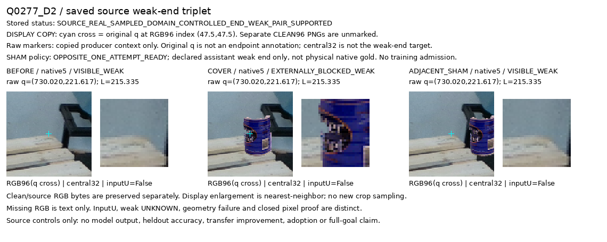

source 자료 개선이며 새 모델 성능 개선 주장이 아닙니다.

# V193 공개 실사 끝점 가림 대조 자료 확장 **실제 픽셀 검증을 통과한 대조 자료가 기존 5쌍에서 27쌍으로 늘었다. 기존 5쌍은 원 배치와 모든 저장 배열을 그대로 보존했다. 모델은 새로 학습하거나 평가하지 않았다.** 원 query 좌표·L·native 순서·초기 추론·96 sampler를 유지했다. 원 SHAM 배치가 실패한 경우에만 dx 부호를 한 번 반전했다. 다른 donor, 크기, 좌표, 끝점 후보를 검색하지 않았다. 의미·입력 UNKNOWN은 승격하지 않았다. ## 실제 결과 | 항목 | 기존 | 이번 | |---|---:|---:| | 검증된 BEFORE/COVER/SHAM 대조 쌍 | 5 | 27 | | 해당 원본 실사 프레임 | 2 | 12 | | 선택된 끝점의 weak D/E/D 라벨 | 15 | 81 | | 지원 native | 0 | 0·1·4·5 | 전체 66시도 중 27쌍을 지원하며, 21개 배치 실패·18개 UNKNOWN을 모두 남겼다. 전체 원22사례/21고유프레임에서 원8키포인트·3variant를 기록한 상태행은 1,584개다. 실제 저장된 입력은 102 packet×8=816행이며 입력 U는112행이다. 이 숫자들은 독립 촬영 장면 수가 아니다. | 선택 native | 원 시도 | 기존 지원 | 이번 지원 | 신규 지원 | 배치 실패 | UNKNOWN | |---|---:|---:|---:|---:|---:|---:| |0|15|5|9|4|6|0| |1|15|0|7|7|5|3| |2|6|0|0|0|0|6| |3|3|0|0|0|0|3| |4|6|0|4|4|2|0| |5|15|0|7|7|8|0| |6|6|0|0|0|0|6| |7|0|0|0|0|0|0| ## 무엇을 검증했나 독립 검증은 원66시도 전체와 실제 저장된102 packet의8키포인트를 다시 계산했다. 원 F64 RGB96/valid96, context224, q/L/ID/native/가용성·U가 일치한다. 같은 YCB RGB/alpha를 두 위치에 붙였고, 끝점의 실제 원96 샘플은 COVER에서 바뀌며 SHAM에서는 같다. 주변 같은 부재 증거는 보존된다. 원5쌍은3variant의 모든 decoded 배열이 일치한다. [독립 검증 결과](independent_actual_source_review_a/actual_review_v1/REVIEW.json) · [원 생성 완료](real_end_opposite_sham_pairs_v1/COMPLETE.json) · [정확 집계 JSON](ROOT_RESULTS_KO.json) ## 실제 crop과 전체 표 [전체66시도 gallery](source_pair_visual_readout_v2_caption_fit/PORTABLE_GALLERY_KO.md) · [전체66상태 표](source_pair_visual_readout_v2_caption_fit/ALL66_SOURCE_STATUS.csv) · [원22사례/원본프레임 목록](source_pair_visual_readout_v2_caption_fit/ALL22_SOURCE_CASES.csv) · [native/variant 전체 상태](source_pair_visual_readout_v2_caption_fit/ALL1584_NATIVE_VARIANT_CENSUS.csv) native5 신규 예시: 왼쪽 BEFORE, 가운데 끝점을 덮은 COVER, 오른쪽 끝점을 보존한 SHAM. cyan cross는 원 q이며, 표시 marker를 원 clean RGB에 넣지 않았다.  [원 raw-coordinate context](source_pair_visual_readout_v2_caption_fit/Q0277_D2/PRODUCER_RAW_CONTEXT_CONTACT.png) ## 남은 제약 이 라벨은 공개 source에서 관찰한 끝점과 2D 불투명 전경 합성에 대한 weak 감독이다. 자연 가림·물리 native gold가 아니다. 27쌍은12원본 프레임에서 donor를 바꾸며 생성한 자료다. 다른7점의 보임/소유자/좌표품질은−1을 유지한다. native2·3·6·7의 공개 실사 직접 감독은 아직 없다. 원 q 중심과 관찰한 finite end는 다를 수 있다. 중앙32 crop에 donor가 있다는 사실만으로 그 끝점의 가림을 판정할 수 없으며, COVER/SHAM 둘 다 중앙32에 donor가 나타나는 경우도 있다. 픽셀 proof 통과가 사람이 96 crop에서 끝점을 명확히 읽거나 새 실사로 전이함을 보장하지 않는다. ## 다음 작업 원본 frame/base/query와 donor 계보를 연결한 그룹 단위 분할을 먼저 동결한다. 이후 별도 weak-end 학습 승인과 raw96·고정 SAM 입력 cache를 준비해 새 head를 처음부터 학습한다. 기존 C54/C55가 본 자료를 후향 독립 검증이라고 부르지 않는다. 현재223·공개held45·기존 syntheticVAL로 학습·문턱·모델 선택하지 않으며 PnP는 건드리지 않는다.